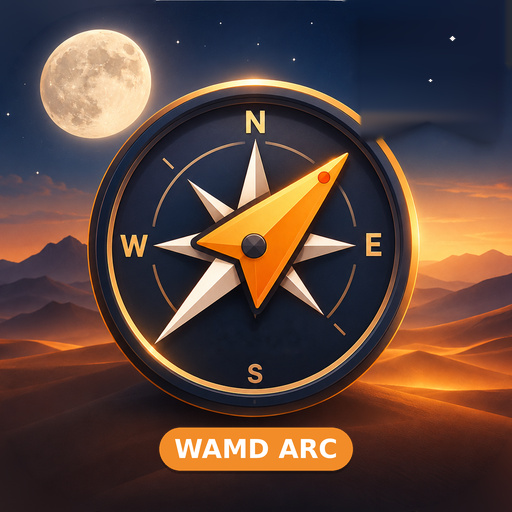

📦
✕
--
🌅
--
🌇
--
--
--
🍂
--
⭐
--
🌡️
--
--
--
--
--
N
E
S
W
📍
➕
🧭
📐
🆘
--
--
--
24.886000
24°53′09.6″N
العربية
English
Ver 2.0
--
0
0:00
0
0
0
0
1
2
sahm.wamdarc.com ↗
3
--
📞 911
🚑 997
🚒 998
--
--
--
--
Sahm
wamdarc.com
2.0
أضف سهم إلى الشاشة الرئيسية
سهم يشتغل كتطبيق من الشاشة الرئيسية: بدون إنترنت، بشاشة كاملة، وأماكنك تنحفظ فيه.
English
Add Sahm to your Home Screen
Sahm runs as an app from your Home Screen: offline, full screen, and your places are kept there.
📤 نسخة احتياطية لأماكنك
Back up your places
⬇️ ثبّت سهم الآن · Install Sahm
⬇️
✨